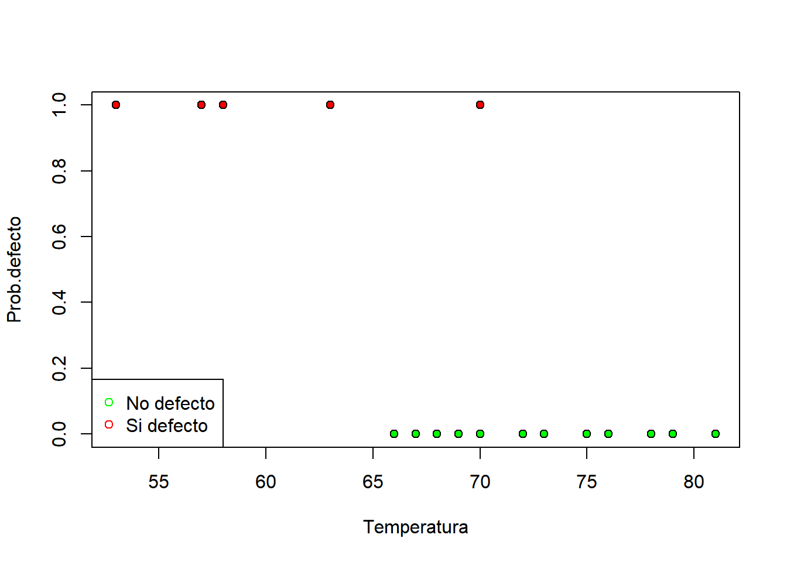
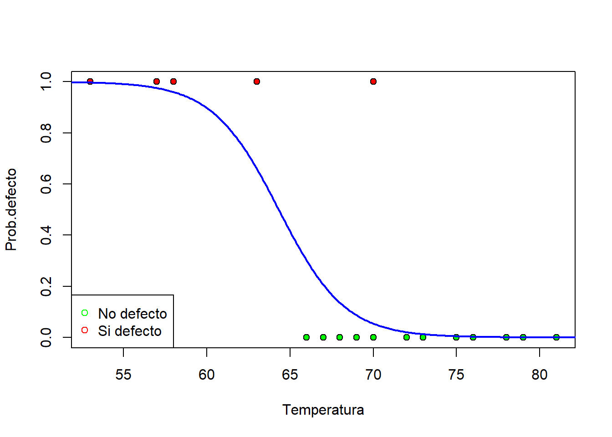
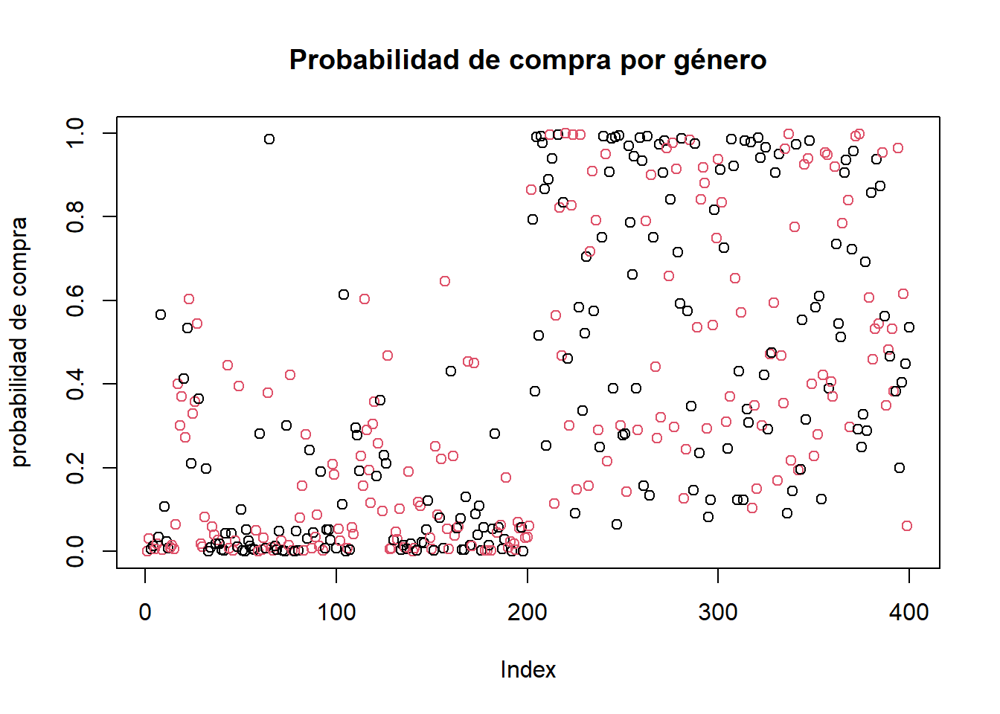
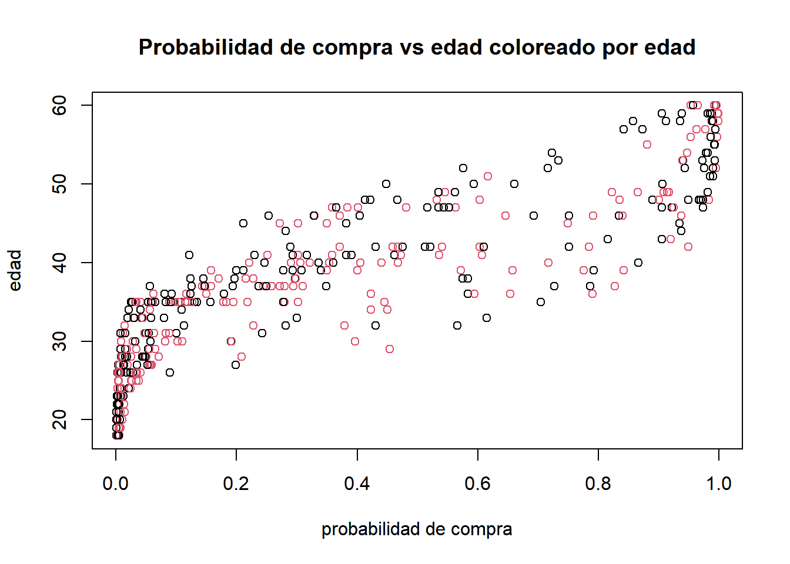
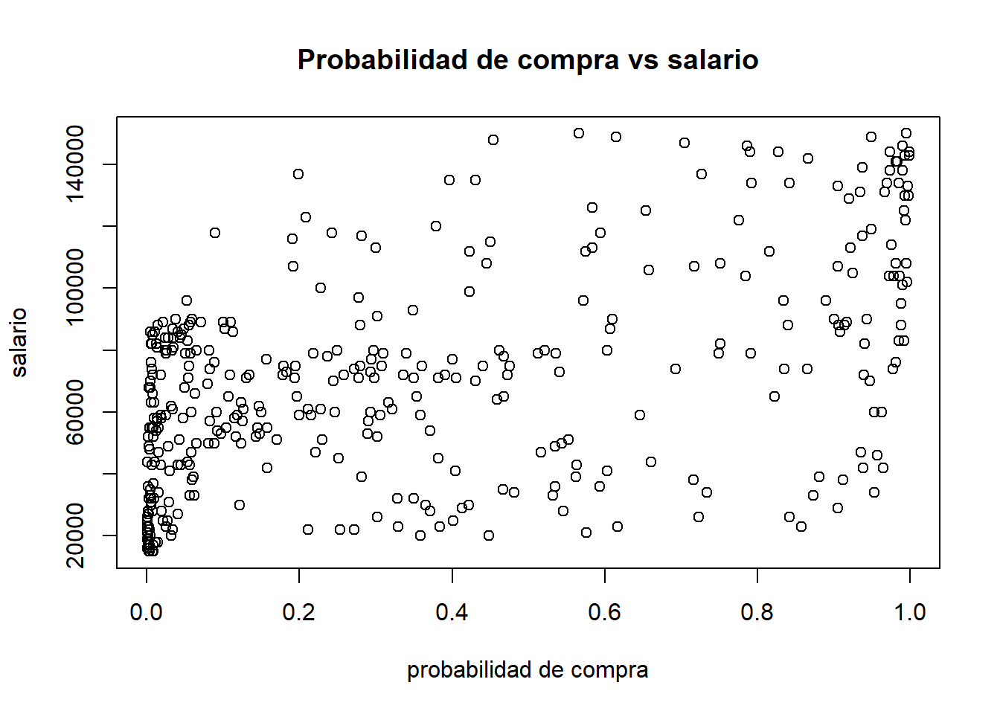
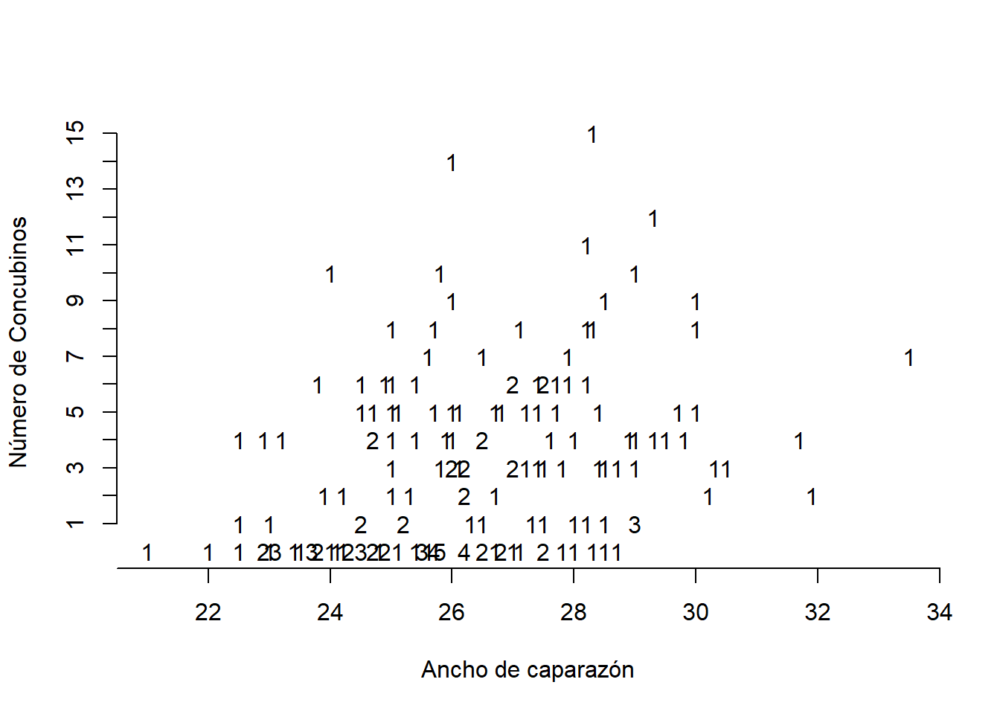
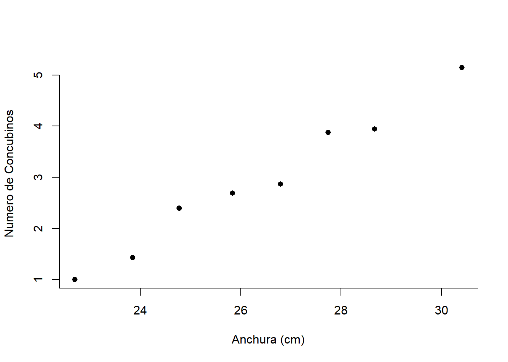
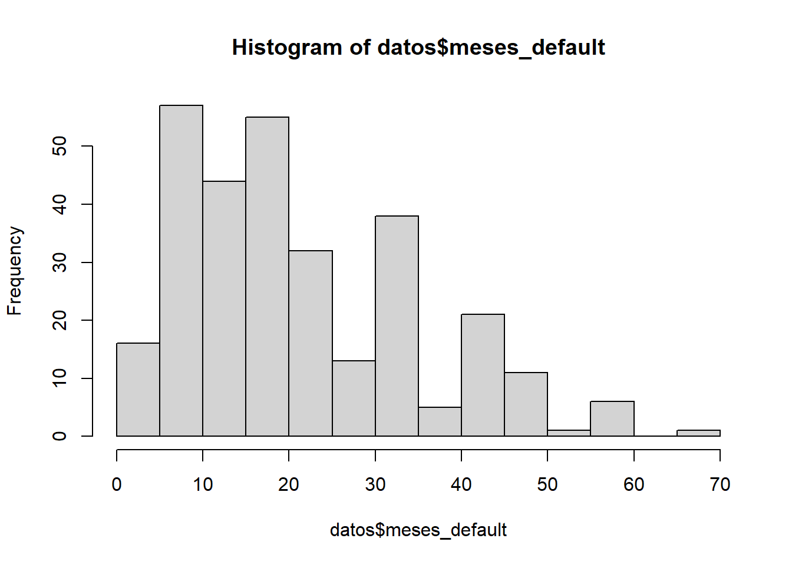

Capítulo 5 Modelos lineales generalizados
En el capítulo anterior exploramos el modelo básico que nos permite responder a la pregunta: ¿puede ser la variable de interés predicha por un conjunto de variables explicativas?
Sin embargo, para poder utilizar dicho modelo, es necesario que la variable respuesta sea continua y cumpla las hipótesis estándar del modelo lineal (datos normales, varianza constante, etc.)
Si la variable de interés es, por ejemplo binaria podemos ajustar un modelo de regresión logística en donde lo que predecimos son las probabilidades de la ocurrencia del evento medido con la variable binaria.
En 1944, Berkson utilizó por primera vez la regresión logística como una forma de solucionar el problema de explicar una variable dicotómica a través de una variable continua. En este caso, la función logit hace que en lugar de trabajar con valores de la variable respuesta entre \((0, 1)\), trabajemos con una variable respuesta que puede tomar cualquier valor.
No fue hasta 1972 cuando John Nelder introdujo los modelos lineales generalizados (GLM por sus siglas en inglés), de ahí que en general se considere a la regresión logística como algo distinto a los GLM, cuando lo que ocurre es que tanto la regresión múltiple como la logística, de Poisson, ordinal, etcétera, son casos particulares de un GLM.
Para entender lo que es un GLM, volvamos al modelo de regresión múltiple, en este modelos suponemos que:
\[Y=\beta_{0}+\beta_{1}X_{1}+\beta_{2}X_{2}+\cdots+\beta_{k}X_{k}+\epsilon\]
\[E[Y]=\beta_{0}+\beta_{1}X_{1}+\beta_{2}X_{2}+\cdots+\beta_{k}X_{k}\]
Es decir, que existe una relación lineal entre las \(X\) y \(E[Y]\) (el valor medio de Y dado un cierto valor de las variables explicativas).
Si las observaciones son binarias, entonces:
\[P(Y = 1) = p\]
\[P(Y = 0) = 1-p\]
Y \(E[Y] = 0\times P(Y = 0) + 1 \times P(Y = 1) = p\), por lo tanto un modelo de regresión múltiple relacionará directamente la probabilidad de que ocurra un suceso con las variables explicativas, lo cual no es lo que se busca al ajustar un modelo de regresión lineal.
Lo que hacen los GLM es establecer esa relación lineal no entre la media de la variable respuesta y los predictores, sino entre una función de la media de variable respuesta y los predictores, es decir:
\[g(E[Y])=\beta_{0}+\beta_{1}X_{1}+\beta_{2}X_{2}+\cdots+\beta_{k}X_{k}\]
Según de qué tipo sea la varible \(Y\), así será la función \(g(\cdot)\).
Entonces se puede decir que un GLM tiene 3 componentes:
- Componente aleatorio: La variable respuesta \(Y\) . Para poder utilizar un GLM, la distribución de \(Y\) ha de pertenecer a la familia exponencial, es decir, su función de densidad ha de poder escribirse como:
\[f(y;\theta,\phi)=exp\{\frac{y\theta-b(\theta)}{a(\phi)}+c(y,\phi)\}\]
donde \(a(\cdot)\), \(b(\cdot)\) y \(c(\cdot)\) son funciones específicas. El parámetro \(\theta\) es lo que se llama parámetro canónico de localización y \(\phi\) es un parámetro de dispersión. Pertenecen a la familia exponecial la distribución Normal, Bernouilli, Binomial, Poisson, Exponecial, Gamma, entre otras.
Componente sistemático: Las variables predictoras \(X_i \ \ i = 1,...,k\)
Función liga: La función que relaciona la media, \(E[Y]\), con las variables predictoras \(X\). En el caso del modelo de regresión ordinaria, \(\mu = \nu\), por lo tanto la función liga es la identidad.
Hay muchas opciones par la función liga. La función liga canonica es una función que transforma la media en el parámetro canónico \(\theta\)
\[g(E[Y])=\theta\]
Entoces \(g(\cdot)\) es la función liga canónica.
La siguiente tabla muestra las funciones link canónicas para las distribuciones más comunes usadas en los GLMs:
| Distribución | Liga canónica |
|---|---|
| Normal | \(X \beta = E[Y]\) (identidad) |
| Binomial | \(X \beta = ln(\frac{P}{1-P})\) (logística) |
| Poisson | \(X \beta = ln(E[Y])\) (logarítmica) |
| Exponencial | \(X \beta = \frac{1}{E[Y]})\) (recíproca) |
| Gamma | \(X \beta = \frac{1}{E[Y]})\) (recíproca) |
La diferencia que hay entre usar la función liga y usar una transformación, es que la función liga transforma la media, \(E[Y]\), y no los datos, \(Y\).
Los GLM generalizan la regresión ordinaria de dos modos: permitiendo que la variable de respuesta \(Y\) tenga distribuciones diferentes a la normal y, por otro lado, incluyendo distintas funciones liga de la media, lo cual resulta muy útil para datos categóricos.
5.1 Regresión logística
El modelo de regresión logistica es un GLM donde la distribución de probabilidad es Bernoulli o Binomial, y la función liga es el logit (ya que relaciona a la media, que en una Bernouilli es la probabilidad con el predictor lineal). Por lo tanto la estimación de los parámetros y los contrastes de hipótesis utilizan la teoría desarrollada para los GLMs.
Estos modelos se utilizan cuando se desea conocer la relación entre
- Una variable dependiente cualitativa, dicotómica.
- Una o más variables explicativas independientes, llamadas covariables ya sean cualitativas o cuantitativas
Por tanto, el objetivo de la regresión logística no es, como en regresión lineal, predecir el valor de la variable \(Y\) a partir de una o varias variables predictoras, sino que queremos predecir la probabilidad de que ocurra \(Y\) conocidos los valores de las variables \(X_i's\).
Recordemos que las covariables cualitativas deben transformarse en las covariables cualitativas dicotómicas ficticias necesarias (variables dummy). De manera que al hacer esta transformación cada categoría de la variable entrará en el modelo de forma individual.
5.2 Modelo de regresión logísitica simple
Para este modelo supondremos que nuestra respuesta, \(Y\), es explicada únicamente por una covariable, \(X\). Asumimos que la variable independiente \(Y\) está codificada como un 0 o un 1.
Entonces, escribimos nuestro modelo como:
\[ln(\frac{p}{1-p})=\beta_{0}+\beta_{1}X\] \[\frac{p}{1-p}=e^{\beta_{0}+\beta_{1}X}\] \[p=e^{\beta_{0}+\beta_{1}X}-p\times e^{\beta_{0}+\beta_{1}X}\] \[p(1+e^{\beta_{0}+\beta_{1}X})=e^{\beta_{0}+\beta_{1}X}\] \[p=\frac{e^{\beta_{0}+\beta_{1}X}}{1+e^{\beta_{0}+\beta_{1}X}}\]
Y:
\[1-p=\frac{1}{1+e^{\beta_{0}+\beta_{1}X}}\]
Los valores posibles de estas ecuaciones varían entre 0 y 1. Un valor cercano a 0 significa que es muy improbable que \(Y\) haya ocurrido, y un valor cercano a 1 significa que es muy probable que tuviese lugar.
Similar a regresión lineal los valores de los parámetros se estiman utilizando el método de máxima verosimilitud que selecciona los coeficientes que hacen más probable que los valores observados ocurran.
Para este análisis tenemos la razón de momios (odds ratio), que corresponde a la razón entre las posibilidades de respuesta.
\[OR=\frac{\frac{P(Y=1|X=1)}{1-P(Y=1|X=1)}}{\frac{P(Y=1|X=0)}{1-P(Y=1|X=0)}}\]
El valor nulo para la razón de momios es el 1. Un \(OR = 1\) implica que las dos categorías comparadas son iguales.
El valor mínimo posible es 0 y el máximo teóricamente posible es infinito.
Un OR inferior a la unidad se interpreta como que el desenlace es menos frecuente en la categoría o grupo que se ha elegido como de interés con respecto al otro grupo o categoría de referencia. Un OR = 3 se interpreta como una ventaja 3 veces superior de una de las categorías \(X = 1\) relativamente a la otra categoría \(X=0\).
5.3 Modelo de regresión logísitica multiple
Análogo a lo que observamos en los modelos de regresión lineal, el modelo de regresión logística se puede facilmente generalizar de un modelo simple a un múltiple.
\[ln(\frac{p}{1-p})=\beta_{0}+\beta_{1}X_1+\beta_{2}X_{2}+...\beta_{k}X_{k}\] \[p=P(Y)=\frac{1}{1+e^{-(\beta_{0}+\beta_{1}X_1+\beta_{2}X_{2}+...\beta_{k}X_{k})}}\]
De nuevo los valores posibles de estas ecuaciones varían entre 0 y 1.
El propósito del análisis es predecir la probabilidad de que un evento \(Y\) ocurra para el \(i-eismo\) individuo. Para dicha \(i-ésima\) persona, \(Y\) será 0 (la respuesta no ocurre) o 1 (la respuesta ocurre), y el valor predicho, \(\mathbb{P}(Y)\), tendrá un valor 0 (no hay probabilidad de que el resultado ocurra) o 1 (el resultado seguro que ocurre).
5.3.1 Regresión logística simple en R
En el siguiente ejercicio se busca analizar si los productos salen o no defectuosos de acuerdo de la temperatura de la máquina que los produce.
Los datos son los siguientes:
temperatura <-c(66,70,69,68,67,72,73,70,57,63,70,78,67,53,67,75,70,81,76,79,75,76,58)
defecto <-c( 0, 0, 0, 0, 0, 0, 0, 0, 1, 1, 1, 0, 0, 1, 0, 0, 0, 0, 0, 0, 0, 0, 1)Con ambos vectores construimos un dataframe:
Resumen visual de los datos:
colores <- NULL
colores[datos$defecto == 0] <- "green"
colores[datos$defecto == 1] <- "red"
plot(datos$temperatura, datos$defecto,
pch = 21, bg = colores, xlab = "Temperatura",
ylab = "Prob.defecto")
legend("bottomleft", c("No defecto", "Si defecto"),
pch = 21, col = c("green", "red"))
Creamos el modelo de regresión logística (modelo de regresión lineal generalizado y parametrizamos por familia binomial).
Tabla resumen:
##
## Call:
## glm(formula = defecto ~ temperatura, family = binomial, data = datos)
##
## Deviance Residuals:
## Min 1Q Median 3Q Max
## -0.84513 -0.38010 -0.09632 -0.02831 2.41364
##
## Coefficients:
## Estimate Std. Error z value Pr(>|z|)
## (Intercept) 32.3381 17.6301 1.834 0.0666 .
## temperatura -0.5028 0.2643 -1.902 0.0571 .
## ---
## Signif. codes: 0 '***' 0.001 '**' 0.01 '*' 0.05 '.' 0.1 ' ' 1
##
## (Dispersion parameter for binomial family taken to be 1)
##
## Null deviance: 24.0850 on 22 degrees of freedom
## Residual deviance: 9.8032 on 21 degrees of freedom
## AIC: 13.803
##
## Number of Fisher Scoring iterations: 7Creamos una nueva variable al dataframe de nuestros datos con las probabilidades de pertenencia a la clase 1 predichas por el modelo.
Dibujamos la recta de probabilidad para cada una de las temperaturas:
datos_probab <- data.frame(temperatura = seq(50, 85, 0.1))
datos.predict <- predict(reg, datos_probab, type = "response")
plot(datos$temperatura, datos$defecto, pch = 21, bg = colores, xlab = "Temperatura", ylab = "Prob.defecto")
legend("bottomleft", c("No defecto", "Si defecto"),
pch = 21, col = c("green", "red"))
lines(datos_probab$temperatura, datos.predict,
col = "blue", lwd = 2)
Bondad de Ajuste:
## [1] 14.28173## [1] 0.0001573848chisq.prob es el p-value de la estadística “modelChi”, para valores pequeños se dice que el modelo es estadisticamente significativo.
5.3.2 Ejercicio.
Se tiene la siguiente tabla donde se eligen varios niveles de ronquidos y se ponen en relación con una enfermedad cardíaca. Se toman como puntuaciones relativas de ronquidos los valores \(\{0, 2, 4, 5\}\).
| Ronquido | Presencia de enfermedad cardiaca | Ausencia de enfermedad cardiaca |
|---|---|---|
| Nunca | 24 | 1355 |
| Ocasional | 35 | 603 |
| Casi cada noche | 21 | 192 |
| Cada noche | 30 | 224 |
Fijamos los niveles de manera ordinal:
roncas <- c(0, 2, 4, 5)
frecuencia <- cbind (SI=c(24 , 35, 21, 30) , NO=c (1355 ,603 , 192 , 224))
logit.irls <- glm( frecuencia~roncas , family = binomial ( link = logit ))
summary ( logit.irls )$ coefficients## Estimate Std. Error z value Pr(>|z|)
## (Intercept) -3.8662481 0.16621436 -23.260614 1.110885e-119
## roncas 0.3973366 0.05001066 7.945039 1.941304e-15El modelo queda de la siguiente forma:
\[ln(\frac{p}{1-p})=-3.87+.40X\]
Como \(\beta = 0.40 > 0\) entonces la probabilidad de ataque cardíaco aumenta cuando los niveles de ronquidos se incrementan.
Con un nivel de ronquido \(X=0\) obtenemos:
\[ln(\frac{p}{1-p})=-3.87\] y
## [1] 0.02043219La probabilidad de tener la enfermedad es 2.04%.
Mientras que si \(X=5\) obtenemos:
\[ln(\frac{p}{1-p})=-3.87+.40*5=-1.87\] y
## [1] 0.1335417La probabilidad de tener la enfermedad aumenta a 13.35%.
Calcular la probabilidad de presentar la enfermedad cardíaca cuando el nivel de ronquido es Ocasional.
¿Cuántas veces más probable es la ocurrencia de la enfermedad cardíaca cuando el nivel de ronquidos es cada noche en comparación con ocasional?
5.3.3 Regresión logística múltiple en R
Los datos corresponden a información sobre la respuesta a anuncios en redes sociales, se tienen datos de género, edad, salario de los individuos asi como la información de si se realizó o no la compra del producto anunciado.
Descriptivos básicos de los datos:
## 'data.frame': 400 obs. of 5 variables:
## $ User.ID : int 15624510 15810944 15668575 15603246 15804002 15728773 15598044 15694829 15600575 15727311 ...
## $ Gender : chr "Male" "Male" "Female" "Female" ...
## $ Age : int 19 35 26 27 19 27 27 32 25 35 ...
## $ EstimatedSalary: int 19000 20000 43000 57000 76000 58000 84000 150000 33000 65000 ...
## $ Purchased : int 0 0 0 0 0 0 0 1 0 0 ...## User.ID Gender Age EstimatedSalary Purchased
## Min. :15566689 Length:400 Min. :18.00 Min. : 15000 Min. :0.0000
## 1st Qu.:15626764 Class :character 1st Qu.:29.75 1st Qu.: 43000 1st Qu.:0.0000
## Median :15694342 Mode :character Median :37.00 Median : 70000 Median :0.0000
## Mean :15691540 Mean :37.66 Mean : 69743 Mean :0.3575
## 3rd Qu.:15750363 3rd Qu.:46.00 3rd Qu.: 88000 3rd Qu.:1.0000
## Max. :15815236 Max. :60.00 Max. :150000 Max. :1.0000Resumen de cuantos elementos hay en cada caso para la variable de compra del producto:
##
## 0 1
## 257 143Creación del modelo de regresión logística(modelo de regresión lineal generalizado y parametrizamos por binomial) aplicando a datos[,-1] estamos dejando fuera la variable “User.ID”:
##
## Call:
## glm(formula = Purchased ~ ., family = binomial, data = datos[,
## -1])
##
## Deviance Residuals:
## Min 1Q Median 3Q Max
## -2.9109 -0.5218 -0.1406 0.3662 2.4254
##
## Coefficients:
## Estimate Std. Error z value Pr(>|z|)
## (Intercept) -1.278e+01 1.359e+00 -9.405 < 2e-16 ***
## GenderMale 3.338e-01 3.052e-01 1.094 0.274
## Age 2.370e-01 2.638e-02 8.984 < 2e-16 ***
## EstimatedSalary 3.644e-05 5.473e-06 6.659 2.77e-11 ***
## ---
## Signif. codes: 0 '***' 0.001 '**' 0.01 '*' 0.05 '.' 0.1 ' ' 1
##
## (Dispersion parameter for binomial family taken to be 1)
##
## Null deviance: 521.57 on 399 degrees of freedom
## Residual deviance: 275.84 on 396 degrees of freedom
## AIC: 283.84
##
## Number of Fisher Scoring iterations: 6Bondad de ajuste:
## [1] 245.7297## [1] 0El modelo queda de la siguiente forma:
\[ln(\frac{p}{1-p})=-12.78+.33*Genero+.237*Edad+0.000036*Salario\]
La prueba Ji-Cuadrada para la significancia del modelo da un p-value de cero, por lo tanto el modelo propuesto con las variables de género, edad y salario resulta ser significativo.
Agregamos a los datos la columna de probabilidad de compra calculada con nuestro modelo:
plot(modelo$fitted.values, col = as.factor(datos$Gender),
main="Probabilidad de compra por género",
ylab="probabilidad de compra")
plot(modelo$fitted.values, datos$Age, col = as.factor(datos$Gender),
main="Probabilidad de compra vs edad coloreado por edad",
xlab="probabilidad de compra",ylab="edad")
plot(modelo$fitted.values, datos$EstimatedSalary,
main="Probabilidad de compra vs salario",
xlab="probabilidad de compra",ylab="salario")
Observamos que de las 3 variables consideradas, la que parece tener más efecto en la probabilidad de compra es la edad.
Veamos ahora algunas probabilidades. Según nuestro modelo ¿cuál es la probabilidad de compra de una mujer 55 años con salario de 80,000?
## [1] 0.9583136¿Y el de una mujer de 35 años con el mismo salario?
## [1] 0.167284Mientrás que la probabilidad de compra de una mujer de 55 años con salario de 80,000 es \(96\%\) una mujer con el mismo salario pero 20 años mas joven tendrá una probabilidad de sólo \(17\%\) de comprar el producto anunciado.
Calcular la probailidad de que un hombre de 45 años con salario de 50,000 compre el producto anunciado.
¿Cuántas veces más probable es que un hombre de 45 años con salario de 100,000 compre el producto que un hombre de la misma edad pero con salario de 50,000?
5.4 Regresión Multinomial
Hasta ahora hemos revisado el caso en el que la variable respuesta era dicotómica. Ahora nos centramos en el caso en el que la variable de interés tiene más de dos categorías, por ejemplo, afiliación política; resultado de un partido de fútbol; marcas de teléfonos celulares, etc.
Por simplicidad, se ilustrará la metodología para el caso de tres categorías, ya que la generalización a más de tres es inmediata.
Supongamos que codificamos las tres categorías de la variable respuesta como 0, 1 y 2. En el caso de regresión logística, el logit es:
\[ln(\frac{p}{1-p})=ln(\frac{P[Y=1]}{P[Y=0]})\]
Ahora el modelo necesita dos funciones logit ya que tenemos tres categorías, y necesitamos decidir que categorías queremos comparar. Lo más general es utilizar \(Y = 0\) como referencia y formar logits comparándola con \(Y = 1\) y \(Y = 2\).
Supongamos que tenemos k variables explicativas, entonces:
\[ln(\frac{P[Y=1]}{P[Y=0]})=\beta_{10}+\beta_{11}X_1+\beta_{12}X_{2}+...\beta_{1k}X_{k}\] \[ln(\frac{P[Y=2]}{P[Y=0]})=\beta_{20}+\beta_{21}X_1+\beta_{22}X_{2}+...\beta_{2k}X_{k}\]
Y ahora tenemos el doble de coeficientes que en el caso de regresión logística.
Las probabilidades se calcularán como:
\[P[Y=0|X]=\frac{1}{1+e^{g_1(X)}+e^{g_2(X)}}\] \[P[Y=1|X]=\frac{e^{g_1(X)}}{1+e^{g_1(X)}+e^{g_2(X)}}\] \[P[Y=2|X]=\frac{e^{g_2(X)}}{1+e^{g_1(X)}+e^{g_2(X)}}\] \[g_1(X)=\beta_{10}+\beta_{11}X_1+\beta_{12}X_{2}+...\beta_{1k}X_{k}\] \[g_2(X)=\beta_{20}+\beta_{21}X_1+\beta_{22}X_{2}+...\beta_{2k}X_{k}\]
5.4.1 Regresión Multinomial en R
Datos “rh_satisfaction” corresponde a información del área de recursos humanos de una empresa que mide el nivel de satisfacción de sus empleados (en escala de 1 a 5).
También se tiene algunas características de los empleados (edad, area, salario, etc). El primer análisis a realizar que queremos analizar es la satisfacción de los empleados a través del salario y la edad. Para ello aplicaremos primero una regresión para cada variable por separado y posteriormente un modelo con ambas.
La función para realizar la regresión multinomial es multinom, la cual es similar a la de los comandos para regresión logística. Esta función está en la librería nnet.
Cargamos la libreria y los datos:
Ajustemos el modelo de regresión multinominal para la satisfacción de los empleados con la variable de salario.
## # weights: 15 (8 variable)
## initial value 804.718956
## iter 10 value 801.134736
## final value 800.932439
## converged## Call:
## multinom(formula = satisfied ~ salary, data = datos)
##
## Coefficients:
## (Intercept) salary
## 2 -0.1080096 3.069240e-06
## 3 -0.2193869 2.708006e-06
## 4 -0.1515928 6.556397e-06
## 5 -0.4102788 1.026791e-05
##
## Residual Deviance: 1601.865
## AIC: 1617.865Tenemos entonces 4 ecuaciones y el análisis está tomando la categoría 1 como la base para construir los modelos logit como vimos en la teoría.
Uno de los usos de este modelo puede ser el calcular probabilidades especifícas para ciertos niveles de satisfacción que sean de interés. Por ejemplo la probabilidad de que un empleado con salario de 50,000 (la media es 50,416.06) esté muy satisfecho en la empresa es \(21\%\) y se calcula de la siguiente forma:
s <- 50000
denom <- 1+exp(-0.108+.0000031*s)+exp(-0.219+.0000027*s) + exp(-0.152+.0000066*s)+exp(-0.410+.0000103*s)
exp(-0.410+.0000103*s)/denom## [1] 0.2106376Mientras que la probabilidad de que este empleado esté completamente insatisfecho será:
## [1] 0.1896422Ahora ajustemos el modelo de regresión multinominal para la satisfacción de los empleados con la variable de edad.
## # weights: 15 (8 variable)
## initial value 804.718956
## iter 10 value 798.978325
## final value 798.956315
## converged## Call:
## multinom(formula = satisfied ~ age, data = datos)
##
## Coefficients:
## (Intercept) age
## 2 -0.0680823 0.002780933
## 3 -0.4380887 0.008846122
## 4 0.6359941 -0.011962449
## 5 1.1775667 -0.028143304
##
## Residual Deviance: 1597.913
## AIC: 1613.913La probabilidad de que un empleado de edad 40 años esté muy satisfecho en la empresa es 20% y se calcula de la siguiente forma:
e <- 40
denom <- 1+exp(-0.068+.0028*e)+exp(-0.438+.0088*e) + exp(0.636-.0120*e)+exp(1.178-.0281*e)
exp(1.178-.0281*e)/denom## [1] 0.2034909Finalmente ajustamos el modelo de regresión con las variables explicativas de salario y edad.
## # weights: 20 (12 variable)
## initial value 804.718956
## iter 10 value 799.192997
## final value 797.372424
## converged## Call:
## multinom(formula = satisfied ~ salary + age, data = datos)
##
## Coefficients:
## (Intercept) salary age
## 2 -0.2315138 3.109419e-06 0.003091909
## 3 -0.5872992 2.836453e-06 0.009138518
## 4 0.2954069 6.368488e-06 -0.011320961
## 5 0.6390753 9.838360e-06 -0.027078238
##
## Residual Deviance: 1594.745
## AIC: 1618.745Con este modelo entonces podemos calcular la probabilidad de que un empleado de edad 25 años esté muy satisfecho en la empresa es \(27\%\) y se calcula de la siguiente forma:
e <- 25
s <- 50000
denom <- 1+exp(-0.232+.0000031*s+0.003*e)+exp(-0.587+.0000028*s+0.009*e) + exp(0.295+.0000063*s-0.011*e)+exp(0.640+.0000098*s-0.027*e)
exp(0.640+.0000098*s-0.027*e)/denom## [1] 0.2730235Mientras que la probabilidad de estar completamente insatisfecho será:
## [1] 0.1732192Calcular la probabilidad de un empleado de 50 años con salario de 65,000 asigne un nivel de satisfacción de 3.
Ajustar un modelo con las variables de salario y educación.
Calcular la probabilidad de que un empleado con estudios de postgrado con salario de 65,000 este completamente satisfecho con la empresa.
Si quisiera analizar la satisfacción por departamento ¿qué procedimiento propondría usar?
5.5 Modelos para conteos
En muchos casos las variables respuesta son conteos, y en ocasiones estos recuentos aparecen al resumir en tablas de contingencia otras variables.
Hay cuatro razones por las que sería erroneo utlizar un modelo de regresión normal para datos de conteo :
- Puede dar lugar a predicciones negativas.
- La varianza de la variable respuesta no es independiente de la media.
- Los errores no siguen una distribución Normal.
- Los ceros que aparecen en la variable respuesta dan problemas a la hora de transformar la variables.
Sin embargo, si la variable es de conteo pero los datos toman valores elevados, entonces si podría ser posible utilizar la distribución Normal.
El modelo más simple para cuando la variable de respuesta son recuentos es asumir que el componente aleatorio \(Y\) sigue una distribución de Poisson. Esta distribución es unimodal y su propiedad más destacada es que la media y la varianza coinciden.
\[E(Y)=Var(Y)=\mu\]
De modo que cuando el número de recuentos es mayor en media, también tienden a tener mayor variabilidad.
La principal diferencia entre la distribución de Poisson y la Binomial, es que, aunque ambas cuentan el número de veces que ocurre algo, en la distribución de Poisson no sabemos cuántas veces no ocurrio, y en la Binomial sí lo sabemos.
Supongamos que estamos haciendo un estudio sobre cuantas larvas de insectos hay en ciertos árboles, los datos de los que disponemos corresponden al número de larvas por hoja \((Y)\). Habrá hojas que no tengan ninguna, y otras que tenga hasta 5 ó 6. Si el número medio de larvas por hoja es \(\mu\), la probabilidad de observar \(y_0\) larvas por hoja viene dada por la siguiente ecuación:
\[P(y_0)=\frac{e^{\mu}\mu^{y_0}}{y_0!}\]
Donde \(\mu\) se puede aproximar con \(\mu=np\), para \(n\) grande y \(p\) pequeño. Es decir, que una distribución de Poisson se obtiene a partir de una Binomial con \(p\) pequeño y \(n\).
Entonces el modelo GLM para los conteos se basará en modelar la relación entre la media muestral \(\mu\) y las variables explicativas.
\[\mu=\beta_{0}+\beta_{1}X_{1}+\beta_{2}X_{2}+\cdots+\beta_{k}X_{k}\]
Por las características de la variable (son conteos) buscamos que la parte derecha de la ecuación sólo tome valores positivos. Por esta razón habitualmente se usa el logaritmo de la media como la función liga, de modo que el modelo log-lineal se puede expresar como:
\[log(\mu) = log(E[Y])=\beta_{0}+\beta_{1}X_{1}+\beta_{2}X_{2}+\cdots+\beta_{k}X_{k}\]
de modo que al despejar \(\mu\) obtenemos:
\[\mu = e^{\beta_{0}+\beta_{1}X_{1}+\beta_{2}X_{2}+\cdots+\beta_{k}X_{k}}\]
5.5.1 Sobredispersión en GLM Poisson
En una distribución de Poisson, la media y la varianza son iguales, pero en la práctica, los datos de conteo muestran mayor variabilidad de la que se espera en un modelo binomial o Poisson. En el caso de este último, es común que la varianza sea mucho mayor que la media \(\mathbb{V}\left(Y\right)>>\mathbb{E}\left(Y\right)=\mu\), este fenómeno se conoce como sobredispersión.
Por ejemplo, podemos suponer que cada individuo tienen igual probabilidad de padecer cierta enfermedad; no obstante, siendo más realistas, es claro que que estas probabilidades varían debido a factores genéticos, de salubridad y de localización geográfica, entre otros, propiciando mayor variabilidad sobre el número de sujetos enfermos en un periodo determinado, que los que puede predecir el modelo Poisson asociado.
Una forma de medir la sobredispersión en los datos es ajustando una distribución quasipoisson, la cual ajustará el modelo con distribución Poisson pero no asumirá varianza igual a la media y calculará el parámetro de dispersión.
5.5.2 GLM Poisson R
Entre los cangrejos cacerola se sabe que cada hembra tiene un macho en su nido, pero puede tener más machos concubinos. Considerando que deseamos relacionar la variable respuesta, el número de concubinos, con las variables explicativas son: color, estado de la espina central, peso y anchura del caparazón, procederemos a ajustar un modelo lineal a los datos.
En un primer análisis sólo consideramos la anchura del caparazón como variable explicativa.
tabla <- read.csv ( "http://www.hofroe.net/stat557/data/crab.txt" , header =TRUE, sep = "\t" )
plot.tabla <- aggregate (rep (1,nrow (tabla)), list (Sa= tabla$Satellite , W=tabla$Width), sum)
plot(tabla$Width,tabla$Satellite, xlab="Ancho de caparazón", ylab="Número de Concubinos", bty="L", axes = FALSE, type ="n")
axis (2, at =1:15)
axis (1, at=seq (20 , 34, 2))
text (y= plot.tabla$Sa , x= plot.tabla$W, labels = plot.tabla$x)
Ahora agruparemos los datos según cortes específicos en la variable de ancho de caparazón (Width) para poder ver visualmente el ajuste del modelo de regresión.
Discretizamos el ancho del caparazón
Calculamos el numero medio de concubinos para cada categoria según el ancho del caparazón:
Determinamos la media del ancho del caparazon por categoría:
Representamos las medias de anchura y la media del numero de concubinos:
plot (x = plot.x , y = plot.y , ylab = " Numero de Concubinos ", xlab = " Anchura (cm) ", bty = "L", axes = FALSE, type = "p", pch = 16)
axis(2, at =0:5)
axis(1, at=seq (20 , 34, 2))
En este caso podemos observar una relación lineal entre la media del número de concubinos y la media del ancho del caparazón por categoría.
Ahora ajustamos el modelo lineal entre el número de concubinos y el ancho del caparazón definiendo una función de distribución Poisson.
##
## Call:
## glm(formula = Satellite ~ Width, family = poisson, data = tabla)
##
## Deviance Residuals:
## Min 1Q Median 3Q Max
## -2.8526 -1.9884 -0.4933 1.0970 4.9221
##
## Coefficients:
## Estimate Std. Error z value Pr(>|z|)
## (Intercept) -3.30476 0.54224 -6.095 1.1e-09 ***
## Width 0.16405 0.01997 8.216 < 2e-16 ***
## ---
## Signif. codes: 0 '***' 0.001 '**' 0.01 '*' 0.05 '.' 0.1 ' ' 1
##
## (Dispersion parameter for poisson family taken to be 1)
##
## Null deviance: 632.79 on 172 degrees of freedom
## Residual deviance: 567.88 on 171 degrees of freedom
## AIC: 927.18
##
## Number of Fisher Scoring iterations: 6Recordando que para medir el ajuste del modelo utilizamos la devianza, en donde la devianza nula es la desviación para el modelo que no depende de ninguna variable. Miéntras que la devianza residual es la diferencia entre la desviación del modelo que no depende de ninguna variable menos la del modelo que incluye a la variable “Width”. La diferencia entre ambas se distribuirá como una distribución Ji-cuadrada con 1 grado de libertad.
Bondad de Ajuste:
## [1] 64.91309## [1] 7.771561e-16Se puede rechazar claramente la hipótesis nula. Por lo que concluimos que hay un aportación significativa de la variable de ancho del caparazón al modelo del número de concubinos.
El modelo queda de la siguiente forma:
\[ln(\mu)=-3.30+0.16*Width\]
Y los valores estimados por el modelo se pueden encontrar en m1$fitted.values. Y se puede predecir la media del números de concubinos para un valor de ancho de caparazón dado, por ejemplo, para una anchura igual a 26.3:
## 1
## 2.744581Entonces siguiendo este modelo, decimos que los cangrejos hembra con ancho de caparazón del 26.3cm tienen en promedio 2.7 parejas.
Podriamos ajustar ahora el modelo con las variables de peso, color y estado de la espina. Se deja al lector el ejercicio de utilizando el algoritmo stepAIC encontrar el mejor modelo para el número de concubinos.
5.6 GLM binomial negativa
Una distribución que puede usarse como alternativa a una Poisson es la . Dado que su varianza es más grande que su media, constituye una excelente alternativa para modelar datos de conteo sobredispersos, que son muy comunes en aplicaciones reales.
Si una variable aleatoria \(Y\) se distribuye como una binomial negativa, entonces la función de probabilidad es:
\[P(y|k,\mu)=\frac{\Gamma(y+k)}{\Gamma(k)\Gamma(y+1)}\left( \frac{k}{\mu+k} \right)^k\left( 1-\frac{k}{\mu+k} \right)^y\]
con \(y=0,1,2,...\) donde \(k\) y \(\mu\) son los parámetros de la distribución y se tiene que
\[E(Y)=\mu\]
\[Var(Y)=\mu+\frac{\mu^2}{k}\]
El parámetro \(\frac{1}{k}\) es un parámetro de dispersión, de modo que si \(\frac{1}{k} \rightarrow 0\) entonces \(Var(Y)\rightarrow \mu\) y la distribución binomial negativa converge a una distribución Poisson.
Por otro lado, para un valor fijo de \(k\) esta distribución pertenece a la familia exponencial natural, de modo que se puede definir un modelo GLM binomial negativo. En general, se usa una función liga de tipo logaritmo.
La regresión binomial negativa se puede utilizar para datos sobredispersos de recuentos, es decir cuando la varianza condicional es mayor que la media condicional. Se puede considerar como una generalización de la regresión de Poisson, ya que tiene su misma estructura de medias y además un parámetro adicional para el modelo de sobredispersión.
Si la distribución condicional de la variable observada es más dispersa, los intervalos de confianza para la regresión binomial negativa es probable que sean más estrechos que los correspondientes a un modelo de regresión de Poisson.
5.6.1 GLM Binomial Negativa en R
Usando los mismos datos de los cangrejos ahora ajustaremos un modelo con distribución binomial negativa:
##
## Call:
## glm.nb(formula = Satellite ~ Width, data = tabla, init.theta = 0.90456808,
## link = log)
##
## Deviance Residuals:
## Min 1Q Median 3Q Max
## -1.7798 -1.4110 -0.2502 0.4770 2.0177
##
## Coefficients:
## Estimate Std. Error z value Pr(>|z|)
## (Intercept) -4.05251 1.17143 -3.459 0.000541 ***
## Width 0.19207 0.04406 4.360 1.3e-05 ***
## ---
## Signif. codes: 0 '***' 0.001 '**' 0.01 '*' 0.05 '.' 0.1 ' ' 1
##
## (Dispersion parameter for Negative Binomial(0.9046) family taken to be 1)
##
## Null deviance: 213.05 on 172 degrees of freedom
## Residual deviance: 195.81 on 171 degrees of freedom
## AIC: 757.29
##
## Number of Fisher Scoring iterations: 1
##
##
## Theta: 0.905
## Std. Err.: 0.161
##
## 2 x log-likelihood: -751.291En este caso el modelo queda de la siguiente forma:
\[ln(\mu)=-4.05+0.19*Width\]
Observamos que tanto la devianza como el coeficiente de Akaike son menores en comparación con el modelo que usa una distribución Poisson.
Adicionalmente habiamos visto que los datos indicaban que la varianza era poco mas de tres veces la media. Por estas razones para este ejemplo se puede decir que un modelo con distribución binomial negativa es mas adecuado.
5.6.2 Ejercicio
La base de datos “productos.csv” contiene información sobre el número de productos financieros que posee cada cliente, adicional a esa información se tiene la edad, género, número de ofertas, antigüedad y el número de créditos que tiene. Deseamos obtener información respecto a la relación entre el número de productos y el resto de las variables que nos permitan incrementar la venta de productos.
Ajustar un modelo al número de productos financieros en función de la edad del cliente.
Asumiendo una distribución Poisson
Calcular con la distribución quasiPoisson el valor del parámetro de dispersión para estos datos.
¿Qué puede concluir de este modelo?
¿Valdrá la pena cambiar a una distribución binomial negativa?
Encontrar el mejor modelo que explique el número de productos financieros a partir de todas las variables disponibles.
¿Qué recomendación puede dar al área de mercadotecnia que esta buscando incrementar el número de productos por cliente?
5.7 Exponencial
Se dice que la variable respuesta \(Y\) es de tipo Exponencial cuando hemos observado el tiempo transcurrido hasta que ocurre un evento de interés como resultado de un conjunto de variables predictoras que pueden ser de tipo numérico o categórico. En este caso similar al caso de conteos también se asume que \(Y\) sólo toma valores positivos y es continua.
En este caso la función liga utilizada es el recíproco, de modo que el modelo lineal se puede expresar como:
\[\frac{1}{E[Y]}=\beta_{0}+\beta_{1}X_{1}+\beta_{2}X_{2}+\cdots+\beta_{k}X_{k}\]
5.7.1 GLM Exponencial en R
Los datos de este ejemplo corresponden a la información de un banco qué busca entender la transición de sus clientes hacia un estado de alto riesgo de crédito. Con la finalidad de entender mejor el momento en que el cliente pasa a un estado de alto riesgo crediticio por falta de pago, el banco hizo un seguimiento a una muestra representativa de sus clientes.
Deseamos identificar cuáles de las características de los clientes influyen en la transición de un estado de bajo riesgo a alto riesgo.
Breve análisis exploratorio:
## 'data.frame': 1000 obs. of 17 variables:
## $ duration : int 6 48 12 42 24 36 24 36 12 30 ...
## $ credit_history : chr "critical/other existing credit" "existing paid" "critical/other existing credit" "existing paid" ...
## $ purpose : chr "radio/tv" "radio/tv" "education" "furniture/equipment" ...
## $ credit_amount : int 1169 5951 2096 7882 4870 9055 2835 6948 3059 5234 ...
## $ installment_commitment: int 4 2 2 2 3 2 3 2 2 4 ...
## $ personal_status : chr "male single" "female div/dep/mar" "male single" "male single" ...
## $ residence_since : int 4 2 3 4 4 4 4 2 4 2 ...
## $ property_magnitude : chr "real estate" "real estate" "real estate" "life insurance" ...
## $ age : int 67 22 49 45 53 35 53 35 61 28 ...
## $ other_payment_plans : chr "none" "none" "none" "none" ...
## $ housing : chr "own" "own" "own" "for free" ...
## $ existing_credits : int 2 1 1 1 2 1 1 1 1 2 ...
## $ job : chr "skilled" "skilled" "unskilled resident" "skilled" ...
## $ num_dependents : int 1 1 2 2 2 2 1 1 1 1 ...
## $ own_telephone : chr "yes" "none" "none" "none" ...
## $ foreign_worker : chr "yes" "yes" "yes" "yes" ...
## $ default : int 0 1 0 0 1 0 0 0 0 1 ...## duration credit_history purpose credit_amount installment_commitment
## Min. : 4.0 Length:1000 Length:1000 Min. : 250 Min. :1.000
## 1st Qu.:12.0 Class :character Class :character 1st Qu.: 1366 1st Qu.:2.000
## Median :18.0 Mode :character Mode :character Median : 2320 Median :3.000
## Mean :20.9 Mean : 3271 Mean :2.973
## 3rd Qu.:24.0 3rd Qu.: 3972 3rd Qu.:4.000
## Max. :72.0 Max. :18424 Max. :4.000
## personal_status residence_since property_magnitude age other_payment_plans
## Length:1000 Min. :1.000 Length:1000 Min. :19.00 Length:1000
## Class :character 1st Qu.:2.000 Class :character 1st Qu.:27.00 Class :character
## Mode :character Median :3.000 Mode :character Median :33.00 Mode :character
## Mean :2.845 Mean :35.55
## 3rd Qu.:4.000 3rd Qu.:42.00
## Max. :4.000 Max. :75.00
## housing existing_credits job num_dependents own_telephone
## Length:1000 Min. :1.000 Length:1000 Min. :1.000 Length:1000
## Class :character 1st Qu.:1.000 Class :character 1st Qu.:1.000 Class :character
## Mode :character Median :1.000 Mode :character Median :1.000 Mode :character
## Mean :1.407 Mean :1.155
## 3rd Qu.:2.000 3rd Qu.:1.000
## Max. :4.000 Max. :2.000
## foreign_worker default
## Length:1000 Min. :0.0
## Class :character 1st Qu.:0.0
## Mode :character Median :0.0
## Mean :0.3
## 3rd Qu.:1.0
## Max. :1.0Selección de observaciones en donde si hubo falta de pago:
Construcción de la variable del tiempo transcurrido al default:

Lo primero será ajustar un modelo que explique el tiempo en que occure la falta de pago en función de la variable tenencia de teléfono propio.
N.B. La distribución exponencial es un caso particular de la distribución gamma y por esa razón en la función glm sólo aparece la familia Gamma
##
## Call:
## glm(formula = meses_default ~ own_telephone, family = Gamma,
## data = datos)
##
## Deviance Residuals:
## Min 1Q Median 3Q Max
## -1.7845 -0.6226 -0.1556 0.2734 1.5773
##
## Coefficients:
## Estimate Std. Error t value Pr(>|t|)
## (Intercept) 0.049933 0.002235 22.34 < 2e-16 ***
## own_telephoneyes -0.009344 0.003234 -2.89 0.00414 **
## ---
## Signif. codes: 0 '***' 0.001 '**' 0.01 '*' 0.05 '.' 0.1 ' ' 1
##
## (Dispersion parameter for Gamma family taken to be 0.374624)
##
## Null deviance: 123.08 on 299 degrees of freedom
## Residual deviance: 120.01 on 298 degrees of freedom
## AIC: 2327.4
##
## Number of Fisher Scoring iterations: 5Bondad de ajuste:
## [1] 3.07052## [1] 0.07972398La prueba de bondad de ajuste da una probabilidad de \(7\%\) que es menor al \(10\%\) y puede considerarse suficiente para decir que el modelo con esta variable si aporta información estadísticamente significativa.
El modelo queda de la siguiente forma:
\[\frac{1}{E(Y)}=0.050-0.009*TeléfonoPropio\]
Con este modelo podriamos calcular, en promedio, en cuantos meses de iniciado el crédito se presentará el no pago en función de si el teléfono es propio o no.
| Var1 | Freq |
|---|---|
| 20.0267380435668 | 187 |
| 24.6371681425079 | 113 |
Recordando que el objetivo del ejercicio es entender mejor la relación entre las caracteristicas de los clientes y su riesgo crediticio nos podemos plantear las siguientes preguntas:
¿A qué se debe que sólo tenemos 2 estimaciones de tiempo?
¿Con estos datos un modelo en donde la variable explicativa es la edad, es mejor?
¿Cómo podemos mejorar el modelo y/o las estimaciones de los tiempo de falta de pago?
5.8 Gamma
Como se mencionó en la sección anterior las distribución exponencial es un caso particular de la distribución gamma. En general cuando la variable de respuesta es de tipo numérico, pero sólo puede tomar valores positivos de forma asimétrica, es decir, se encuentra concentrada en un conjunto de valores y su frecuencia disminuye cuando aumenta el valor de la respuesta, se dice que la variable se distribuye gamma.
La distribución gamma sólo está definida para valores mayores a cero, por lo que si la variable de respuesta \(Y\) toma valores negativos o cero, para poder utilizar esta distribución será necesario realizar una transformación de los datos, sumando una constante lo suficientemente grande que haga todas las obervaciones positivas.
Análogo al caso exponencial, la función liga utilizada es el recíproco, de modo que el modelo lineal se expresa como:
\[\frac{1}{E[Y]}=\beta_{0}+\beta_{1}X_{1}+\beta_{2}X_{2}+\cdots+\beta_{k}X_{k}\]
5.8.1 GLM Gamma en R
La base de datos que utilizaremos para este ejemplo, corresponde a las reclamaciones recibidas por cierta aseguradora para su producto de seguro de automóviles. Los siniestros corresponden al primer trimestre de 2015 y se registraron además del monto total reclamado, características del asegurado asi como del siniestro.
La aseguradora busca modelar el monto total reclamado en función de las otras variables medidas para con ello mejorar su cálculo de primas e identificación de grupos que deberian tener sobreprima.
Cargamos los datos y realizamos un breve análisis exploratorio de los datos.
## 'data.frame': 1000 obs. of 22 variables:
## $ months_as_customer : int 328 228 134 256 228 256 137 165 27 212 ...
## $ age : int 48 42 29 41 44 39 34 37 33 42 ...
## $ policy_number : int 521585 342868 687698 227811 367455 104594 413978 429027 485665 636550 ...
## $ policy_state : chr "OH" "IN" "OH" "IL" ...
## $ policy_deductable : int 1000 2000 2000 2000 1000 1000 1000 1000 500 500 ...
## $ policy_annual_premium : num 1407 1197 1413 1416 1584 ...
## $ insured_sex : chr "MALE" "MALE" "FEMALE" "FEMALE" ...
## $ insured_education_level : chr "MD" "MD" "PhD" "PhD" ...
## $ insured_occupation : chr "craft-repair" "machine-op-inspct" "sales" "armed-forces" ...
## $ insured_hobbies : chr "sleeping" "reading" "board-games" "board-games" ...
## $ insured_relationship : chr "husband" "other-relative" "own-child" "unmarried" ...
## $ incident_date : chr "25/01/2015" "21/01/2015" "22/02/2015" "10/01/2015" ...
## $ incident_type : chr "Single Vehicle Collision" "Vehicle Theft" "Multi-vehicle Collision" "Single Vehicle Collision" ...
## $ collision_type : chr "Side Collision" "?" "Rear Collision" "Front Collision" ...
## $ incident_severity : chr "Major Damage" "Minor Damage" "Minor Damage" "Major Damage" ...
## $ authorities_contacted : chr "Police" "Police" "Police" "Police" ...
## $ incident_hour_of_the_day : int 5 8 7 5 20 19 0 23 21 14 ...
## $ number_of_vehicles_involved: int 1 1 3 1 1 3 3 3 1 1 ...
## $ auto_make : chr "Saab" "Mercedes" "Dodge" "Chevrolet" ...
## $ auto_model : chr "92x" "E400" "RAM" "Tahoe" ...
## $ auto_year : int 2004 2007 2007 2014 2009 2003 2012 2015 2012 1996 ...
## $ total_claim_amount : int 71610 5070 34650 63400 6500 64100 78650 51590 27700 42300 ...## months_as_customer age policy_number policy_state policy_deductable
## Min. : 0.0 Min. :19.00 Min. :100804 Length:1000 Min. : 500
## 1st Qu.:115.8 1st Qu.:32.00 1st Qu.:335980 Class :character 1st Qu.: 500
## Median :199.5 Median :38.00 Median :533135 Mode :character Median :1000
## Mean :204.0 Mean :38.95 Mean :546239 Mean :1136
## 3rd Qu.:276.2 3rd Qu.:44.00 3rd Qu.:759100 3rd Qu.:2000
## Max. :479.0 Max. :64.00 Max. :999435 Max. :2000
## policy_annual_premium insured_sex insured_education_level insured_occupation insured_hobbies
## Min. : 433.3 Length:1000 Length:1000 Length:1000 Length:1000
## 1st Qu.:1089.6 Class :character Class :character Class :character Class :character
## Median :1257.2 Mode :character Mode :character Mode :character Mode :character
## Mean :1256.4
## 3rd Qu.:1415.7
## Max. :2047.6
## insured_relationship incident_date incident_type collision_type incident_severity
## Length:1000 Length:1000 Length:1000 Length:1000 Length:1000
## Class :character Class :character Class :character Class :character Class :character
## Mode :character Mode :character Mode :character Mode :character Mode :character
##
##
##
## authorities_contacted incident_hour_of_the_day number_of_vehicles_involved auto_make
## Length:1000 Min. : 0.00 Min. :1.000 Length:1000
## Class :character 1st Qu.: 6.00 1st Qu.:1.000 Class :character
## Mode :character Median :12.00 Median :1.000 Mode :character
## Mean :11.64 Mean :1.839
## 3rd Qu.:17.00 3rd Qu.:3.000
## Max. :23.00 Max. :4.000
## auto_model auto_year total_claim_amount
## Length:1000 Min. :1995 Min. : 100
## Class :character 1st Qu.:2000 1st Qu.: 41813
## Mode :character Median :2005 Median : 58055
## Mean :2005 Mean : 52762
## 3rd Qu.:2010 3rd Qu.: 70593
## Max. :2015 Max. :114920Eliminar las columnas que contienen información específica:
Ajustaremos un primer modelo con la variable de género del asegurado:
##
## Call:
## glm(formula = total_claim_amount ~ insured_sex, family = Gamma,
## data = datos)
##
## Deviance Residuals:
## Min 1Q Median 3Q Max
## -3.2500 -0.2192 0.0987 0.3053 0.8796
##
## Coefficients:
## Estimate Std. Error t value Pr(>|t|)
## (Intercept) 1.875e-05 4.049e-07 46.30 <2e-16 ***
## insured_sexMALE 4.519e-07 6.027e-07 0.75 0.454
## ---
## Signif. codes: 0 '***' 0.001 '**' 0.01 '*' 0.05 '.' 0.1 ' ' 1
##
## (Dispersion parameter for Gamma family taken to be 0.2504562)
##
## Null deviance: 599.52 on 999 degrees of freedom
## Residual deviance: 599.38 on 998 degrees of freedom
## AIC: 23578
##
## Number of Fisher Scoring iterations: 5Bondad de ajuste:
## [1] 0.1409954## [1] 0.7072934La prueba de bondad de ajuste nos dice que el modelo es malo ya que la explicación de la varianza ganada con el modelo no es estadísticamente significativa.
Intentemos ahora con la variable de edad
##
## Call:
## glm(formula = total_claim_amount ~ age, family = Gamma, data = datos)
##
## Deviance Residuals:
## Min 1Q Median 3Q Max
## -3.2383 -0.2181 0.0940 0.3057 0.8563
##
## Coefficients:
## Estimate Std. Error t value Pr(>|t|)
## (Intercept) 2.175e-05 1.313e-06 16.571 <2e-16 ***
## age -7.125e-08 3.228e-08 -2.208 0.0275 *
## ---
## Signif. codes: 0 '***' 0.001 '**' 0.01 '*' 0.05 '.' 0.1 ' ' 1
##
## (Dispersion parameter for Gamma family taken to be 0.2506544)
##
## Null deviance: 599.52 on 999 degrees of freedom
## Residual deviance: 598.31 on 998 degrees of freedom
## AIC: 23576
##
## Number of Fisher Scoring iterations: 5Bondad de ajuste:
## [1] 1.207078## [1] 0.2719116¿Es un buen modelo?, ¿Es mejor que el modelo de género?
Probar con la variable de tipo de siniestro.
##
## Call:
## glm(formula = total_claim_amount ~ incident_type, family = Gamma,
## data = datos)
##
## Deviance Residuals:
## Min 1Q Median 3Q Max
## -2.44568 -0.18206 -0.01135 0.17050 0.80416
##
## Coefficients:
## Estimate Std. Error t value Pr(>|t|)
## (Intercept) 1.622e-05 2.108e-07 76.967 <2e-16 ***
## incident_typeParked Car 1.722e-04 5.471e-06 31.470 <2e-16 ***
## incident_typeSingle Vehicle Collision -7.070e-07 2.944e-07 -2.401 0.0165 *
## incident_typeVehicle Theft 1.650e-04 4.976e-06 33.162 <2e-16 ***
## ---
## Signif. codes: 0 '***' 0.001 '**' 0.01 '*' 0.05 '.' 0.1 ' ' 1
##
## (Dispersion parameter for Gamma family taken to be 0.07073018)
##
## Null deviance: 599.520 on 999 degrees of freedom
## Residual deviance: 80.724 on 996 degrees of freedom
## AIC: 21492
##
## Number of Fisher Scoring iterations: 5Bondad de ajuste:
## [1] 518.7961## [1] 0¿Qué podemos decir de este modelo?, ¿Nos sirve este modelo para clasificar la sobreprima?
¿Podemos encontrar un mejor modelo?